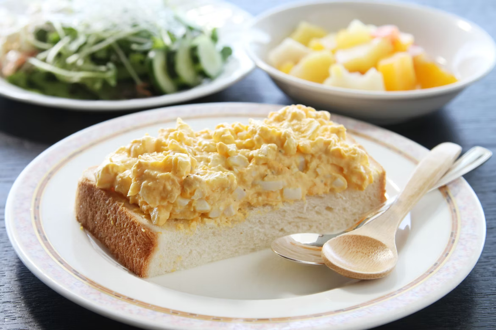

Egg Salad Sandwich Recipe

Description
This recipe for egg salad sandwiches is from Allrecipes.com.
It can take up to 35 minutes to prepare and will serve up to four people. Egg Salad Sandwiches can be accompanied by a variety of sides such as pickles, French fries, or
even coleslaw. Its basic nutritional facts are as follows:
- 333 Calories
- 30g of Fat
- 2g of Carbs
- 13g of Protein
Ingredients
- 8 Hard Boiled Eggs
- 1/2 Cup of Mayonnaise
- 1 Teaspoon of Mustard
- 1/4 Cup of Chopped Green Onions
- 1/4 Teaspoon of Paprika
- Salt & Pepper To Taste
- Bread
Steps
- Gather ingredients.
- Boil eggs.
- Remove eggs from hot water: cool, peel, and chop.
- Combine chopped eggs in bowl with mayonnaise, green onion, and mustard.
- Season mixture with paprika, salt, and pepper.
- Stir.
- Place on bread of choice and serve.
Home